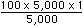
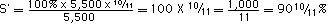

|
CHAPTER XVI.
The Turnover of Variable Capital .
. . . . . |
297 | |
|
The Annual Rate of Surplus-Value .
. . . . .
. . . . |
297 | |
page 297
THE TURNOVER OF VARlABLE CAPlTAL
I. THE ANNUAL RATE OF SURPLUS-VALUE
Let us assume a circulating capital of £2,500 four-fifths of which, or £2,000, are constant capital (materials of production) and one-fifth, or £500, is variable capital invested in wages.
Let the period of turnover be 5 weeks: the working period 4 weeks, the period of circulation 1 week. Then capital I is £2,000, consisting of £1,600 of constant capital and £400 of variable capital; capital II is £500, £400 of which are constant and £100 variable. In every working week a capital of £500 is invested. In a year of 50 weeks an annual product of 50 times 500, or £25,000, is manufactured. Capital I of £2,000, constantly employed in the working period, is therefore turned over 12 1/2 times. 12 1/2 times 2,000 makes £25,000. Of these £25,000 four-fifths, or £20,000, are constant capital laid out in means of production, and one-fifth, or £5,000, is variable capital laid out in wages. The total capital of £2,500 is thus turned over 25,000/2,500 , or 10, times.
The variable circulating capital expended in production can serve afresh in the process of circulation only to the extent that the product in which its value is reproduced has been sold, converted from a commodity-capital into a money-capital, in order to be once more laid out in payment of labour-power. But the same is true of the constant circulating capital (materials of production) invested in production, the value of which reappears in the product as a portion of its value. What these two portions -- the variable and the constant part of the circulating capital -- have in common and what distinguishes them from the fixed capital is not that the value transferred from them to the product is circulated by the commodity-capital, i.e., through the circulation of the product as a commodity. One portion of
page 298
the value of the product, and thus of the product circulating as a commodity, of the commodity-capital, always consists of the wear and tear of the fixed capital, that is to say, of that portion of the value of the fixed capital which is transferred to the product during the process of production. The difference is really this: The fixed capital continues to function in the process of production in its old use-form for a longer or shorter cycle of turnover periods of the circulating capital (equal to constant circulating plus variable circulating capital), while every single turnover is conditioned on the replacement of the entire circulating capital passing from the sphere of production -- in the form of commodity-capital -- into the sphere of circulation. The constant circulating and variable circulating capital have the first phase of circulation, C'--M, in common. In the second phase they separate. The money into which the commodity is reconverted is in part transformed into a productive supply (constant circulating capital). Depending on the different terms of purchase of its constituent parts, one portion of the money may sooner, another later, be converted from money into materials of production, but finally it is wholly consumed that way. Another portion of the money realised by the sale of the commodity is held in the form of a money-supply, in order to be gradually expended in payment of the labour-power incorporated in the process of production. This part constitutes the variable circulating capital. Nevertheless the entire replacement of either portion always originates from the turnover of the capital, from its conversion into a product, from a product into a commodity, from a commodity into money. This is the reason why, in the preceding chapter, the turnover of the circulating capital, constant and variable, was treated jointly and separately without paying any regard to the fixed capital.
In the question which we shall now take up, we must go a step farther and proceed with the variable portion of the circulating capital as though it alone constituted the circulating capital. In other words, we leave out of consideration the constant circulating capital which is turned over together with it.
A sum of £2,500 has been advanced and the value of the annual product is £25,000. But the variable portion of the circulating capital is £500; therefore the variable capital contained in £25,000 amounts to 25,000 divided by 5, or £5,000. If we divide these £5,000 by £500, we find that the number of turnovers is 10, just as it is in the case of the total capital of £2,500 Here, where it is only a question of the production of sur-
page 299
plus-value, it is absolutely correct to make this average calculation, according to which the value of the annual product is divided by the value of the advanced capital and not by the value of that portion of this capital which is employed constantly in one working period (thus, in the present case not by 400 but by 500, not by capital I but by capital I plus capital II). We shall see later that, from another point of view, the calculation is not quite exact, just as this average calculation generally is not quite exact. That is to say, it serves well enough for the practical purposes of the capitalist, but it does not express exactly or properly all the real circumstances of the turnover.
We have hitherto ignored one part of the value of the commodity-capital, namely the surplus-value contained in it, which was produced during the process of production and incorporated in the product. To this we have now to direct our attention.
Suppose the variable capital of £100 invested weekly produces a surplus-value of 100%, or £100, then the variable capital of £500 invested over a 5-week turnover period produccs £500 of surplus-value, i.e., one half of the working-day consists of surplus-labour.
If £500 of variable capital produce a surplus-value of £500 then £5,000 produce ten times £500, or £5,000, in surplus-value. But the advanced variable capital amounts to £500. The ratio of the total surplus-value produced during one year to the sum of value of the advanced variable capital is what we call the annual rate of surplus-value. In the case at hand it is 5,000 to 500, or 1,000%. If we analyse this rate more closely, we find that it is equal to the rate of surplus-value produced by the advanced variable capital during one period of turnover, multiplied by the number of turnovers of the variable capital (which coincides with the number of turnovers of the entire circulating capital).
The variable capital advanced in the case before us for one period of turnover is £500. The surplus-value produced during this period is likewise £500. The rate of surplus-value for one period of turnover is therefore 500s/500v, or 100%. This 100%, multiplied by 10, the number of turnovers in one year, makes 5,000s/500v, or 1,000%.
That refers to the annual rate of surplus-value. As for the amount of surplus-value obtained during a specified period of turnover, it is equal to the value of the variable capital ad-
page 300
vanced during this period, or £500 in the present case, multiplied by the rate of surplus-value, in the present case therefore 500 times 100/100, or 500 times 1, or £500. If the advanced variable capital were £1,500, then with the same rate of surplus-value the amount of surplus-value would be 1,500 times 100/100, or £1,500.
We shall apply the term capital A to the variable capital of £500, which is turned over ten times per year, producing an annual surplus-value of £5,000 for which, therefore, the yearly rate of surplus-value is 1,000%.
Now let us assume that another variable capital, B, of £5,000, is advanced for one whole year (i.e., here for 50 weeks), so that it is turned over only once a year. We assume furthermore that at the end of the year the product is paid for on the same day that it is finished, so that the money-capital, into which it is converted, returns on the same day. The circulation period is then zero, the period of turnover equals the working period, namely, one year. As in the preceding case there is to be found in the labour-process each week a variable capital of £100, or of £5,000 in 50 weeks. Let the rate of surplus-value be the same, or 100%, i.e., let one half of the working-day of the same length consist of surplus-labour. If we consider 5 weeks, the invested variable capital is £500, the rate of surplus-value 100 % and therefore the amount of surplus-value produced in 5 weeks £500. The quantity of labour-power here exploited, and the intensity of its exploitation, are assumed to be exactly the same as those of capital A.
Each week the invested variable capital of £100 produces a surplus-value of £100, hence in 50 weeks the invested capital of 50 X 100 =£5,000 produces a surplus-value of £5,000. The amount of surplus-value produced annually is the same as in the previous case, £5,000, but the yearly rate of surplus-value is entirely different. It is equal to the surplus-value produced in one year divided by the advanced variable capital: 5,000s/5,000v or 100%, while in the case of capital A it was 1,000%.
In the case of both capitals A and B, we have invested a variable capital of £100 a week. The degree of self-expansion, or the rate of surplus-value, is likewise the same, 100%, and so is the magnitude of the variable capital, £100. The same quantity of labour-power is exploited, the volume and degree of exploitation are equal in both cases, the working-days are the same and equally
page 301
divided into necessary labour and surplus-labour. The amount of variable capital employed in the course of the year is £5,000 in either case; it sets the same amount of labour in motion, and extracts the same amount of surplus-value, £5,000, from the labour-power set in motion by these two equal capitals. Nevertheless there is a difference of 900% in the annual rate of surplus-value of the two capitals A and B.
This phenomenon creates the impression, at all events, that the rate of surplus-value depends not only on the quantity and intensity of exploitation of the labour-power set in motion by the variable capital, but besides on inexplicable influences arising from the process of circulation. And it has indeed been so interpreted, and has -- if not in this its pure form, then at least in its more complicated and disguised form, that of the annual rate of profit -- completely routed the Ricardian school since the beginning of the twenties.
The strangeness of this phenomenon disappears at once when we place capitals A and B in exactly the same conditions, not only seemingly but actually. These equal conditions exist only when the variable capital B in its entire volume is expended for the payment of labour-power in the same period of time as capital A.
In that case the £5,000 of capital B are invested for 5 weeks, £1,000 per week makes an investment of £50,000 per year. The surplus-value is then likewise £50,000, according to our premises. The turned-over capital of £50,000 divided by the advanced capital of £5,000 makes the number of turnovers 10. The rate of surplus-value, 5,000s/5,000v, or 100%, multiplied by the number of turnovers, 10, makes the annual rate of surplus-value 5,000s/5,000v, or 10/1, or 1,000%. Now the annual rates of surplus-value are alike for A and B, namely 1,000%, but the amounts of the surplus-value are £50,000 in the case of B, and £5,000 in the case of A. The amounts of the surplus-value produced are now in the same proportion to one another as the advanced capital values B and A, to wit: 5,000:500 = 10:1. But capital B has set in motion ten times as much labour-power as capital A within the same time.
Only the capital actually employed in the labour-process produces surplus-value and to it apply all laws relating to surplus-value, including therefore the law according to which the quantity of surplus-value, its rate being given, is determined by the relative magnitude of the variable capital.[*]
page 302
The labour-process itself is measured by time. If the Iength of the working-day is given (as here, where we assume all conditions relating to A and B to be equal, in order to elucidate the difference in the annual rate of surplus-value), the working week consists of a definite number of working-days. Or we may consider any working period, for instance this working period of 5 weeks, as one single working-day of, say, 300 hours, if the working-day has l0 hours and the week 6 days. We must further multiply this number by the number of labourers who are employed conjointly every day simultaneously in the same labour-process. If that number is taken as 10, there will be 60 times 10 or 600 hours in one week, and a working period of 5 weeks would have 600 times 5, or 3,000 hours. The rate of surplus-value and the length of the working-day being the same, variable capitals of equal magnitude are therefore employed, if equal quantities of labour-power (a labour-power of the same price multiplied by the number of labourers) are set in motion in the same time.
Let us now return to our original examples. In both cases, A and B, equal variable capitals of £100 per week are invested every week throughout the year. The invested variable capitals actually functioning in the labour-process are therefore equal, but the advanced variable capitals are very unequal. In the case of A, £500 are advanced for every 5 weeks, of which £100 are employed every week. In the case of B, £5,000 must be advanced for the first 5-week period, of which only £100 per week, or £500 in 5 weeks, or one-tenth of the advanced capital, is employed. In the second 5-weck period £4,500 must be advanced, but only £500 of this is employed, etc. The variable capital advanced for a definite period of time is converted into employed, hence actually functioning and operative variable capital only to the extent that it really steps into the sections of that period of time taken up by the labour-process, to the extent that it really functions in the labour-process. In the intermediate time, in which a portion of it is advanced in order to be employed later, this portion is practically non-existent for the labour process and has therefore no influence on the formation of either value or surplus-value. Take for instance capital A, of £500. It is advanced for 5 weeks, but every week only £100 enter successively into the labour-process. In the first week one-fifth of this capital is employed; four-fifths are advanced without being employed, although they must be in stock, and therefore advanced, for the labour-processes of the following 4 weeks.
The circumstances which differentiate the relation between
page 303
the advanced and the employed variable capital affect the production of surplus-value -- the rate of surplus-value being given -- only to the extent, and only by reason of the fact that they differentiate the quantity of variable capital which can be really employed in a stated period of time, for instance in one week, 5 weeks, etc. The advanced variable capital functions as variable capital only to the extent and only during the time that it is actually employed, and not during the time in which it remains in stock, is advanced, without being employed. But all the circumstances which differentiate the relation between the advanced and the employed variable capital come down to the difference of the periods of turnover (determined by the difference of either the working period, or the circulation period, or both). The law of the production of surplus-value states that equal quantities of functioning variable capital produce equal quantities of surplus-value if the rate of surplus-value is the same. If, then, equal quantities of variable capital are employed by the capitals A and B in equal periods of time with equal rates of surplus-value, they must generate equal quantities of surplus-value in equal periods of time, no matter how different the ratio of this variable capital employed during a definite period of time to the variable capital advanced during the same time, and no matter therefore how different the ratio of the quantities of surplus-value produced, not to the employed but to the advanced variable capital in general. The difference of this ratio, far from contradicting the laws of the production of surplus-value that have been demonstrated, rather corroborates them and is one of their inevitable consequences.
Let us consider the first 5-week productive period of capital B. At the end of the fifth week £500 have been employed and consumed. The value of the product is £1,000, hence 500s/500v=100%. Just the same as with capital A. The fact that, in the case of capital A, the surplus-value is realised together with the advanced capital, while in the case of B it is not, does not concern us here, where it is only a question of the production of surplus-value and of its ratio to the variable capital advanced during its production. But if on the contrary we calculate the ratio of surplus-value in B, not to that portion of the advanced capital of £5,000 which has been employed and hence consumed during its production, but to this total advanced capital itself, we find that it is 500s/5,000v or 1/10, or 10%. Hence it is 10% for capital
page 304
B and 100% for capital A, i.e., ten-fold. If it were said: this difference in the rate of surplus-value for equal capitals, which have set in motion equal quantities of labour equally divided at that into paid and unpaid labour, is contrary to the laws of the production of surplus-value, the answer would be simple and prompted by a mere glance at the actual relations: In the case of A, the actual rate of surplus-value is expressed, i.e., the relation of a surplus-value produced in 5 weeks by a variable capital of £500, to this variable capital of £500. In the case of B on the other hand the calculation is of a kind which has nothing to do either with the production of surplus-value or with the determination of its corresponding rate of surplus-value. For the £500 of surplus-value produced by a variable capital of £500 are not calculated with reference to the £500 of variable capital advanced during their production, but with reference to a capital of £5,000, nine-tenths of which, or £4,500, have nothing whatever to do with the production of this surplus-value of £500, but are on the contrary intended to function gradually in the course of the following 45 weeks, so that they do not exist at all so far as the production of the first 5 weeks is concerned, which alone is at issue in this instance. Hence in this case the difference in the rates of surplus-value of A and B presents no problem at all.
Let us now compare the annual rates of surplus-value for capitals B and A. For capital B it is 5,000s/5,000v=l00%; for capital A it is 5,000s/500v=1,000%. But the ratio of the rates of surplus-value is the same as before. There we had
But 10% :100 % = 100% :1,000%, so that the proportion is the same. But now the problem has changed. The annual rate of capital B, 5,000s/5,000v=100%, offers not the slightest deviation -- not even the semblance of a deviation -- from the laws of production
page 305
known to us and of the rate of surplus-value corresponding to this production. During the year 5,000v have been advanced and productively consumed, and they have produced 5,000s. The rate of surplus-value therefore equals the above fraction, 5,000s/5,000v=100%. The annual rate agrees with the actual rate of surplus-value. In this case it is therefore not capital B but capital A which presents an anomaly that has to be explained.
We have here the rate of surplus-value 5,000s/500v=1,000%. But while in the first case 500s, the product of 5 weeks, was calculated for an advanced capital of £5,000, nine-tenths of which were not employed in its production, we have now 5,000s calculated for 500v, i.e., for only one-tenth of the variable capital actually employed in the production of 5,000s; for the 5,000s are the product of a variable capital of £5,000 productively consumed during 50 weeks, not that of a capital of £500 consumed in one single period of 5 weeks. In the first case the surplus-value produced in 5 weeks had been calculated for a capital advanced for 50 weeks, a capital ten times as large as the one consumed during the 5 weeks. Now the surplus-value produced in 50 weeks is calculated for a capital advanced for 5 weeks, a capital ten times smaller than the one consumed in 50 weeks.
Capital A, of £500, is never advanced for more than 5 weeks. At the end of this time it returns and can renew the same process in the course of the year ten times, as it makes ten turnovers. Two conclusions follow from this:
Firstly: The capital advanced in the case of A is only five times larger than that portion of capital which is constantly employed in the productive process of one week. On the other hand capital B which is turned over only once in 50 weeks and must therefore be advanced for 50 weeks, is fifty times larger than that one of its portions which can constantly be employed for one week. The turnover therefore modifies the relation between the capital advanced during the year for the process of production and the capital constantly employable for a definite period of production, say, a week. Here we have, then, the first case, in which the surplus-value of 5 weeks is not calculated for the capital employed during these 5 weeks, but for a capital ten times larger, employed for 50 weeks.
Secondly: The 5-week period of turnover of capital A comprises only one-tenth of the year, so that one year contains ten such turnover periods, in which capital A of £500 is succes-
page 306
sively re-invested. The employed capital is here equal to the capital advanced for 5 weeks, multiplied by the number of periods of turnover per year. The capital employed during the year is 500 times 10, or £5,000. The capital advanced during the year is 5,000/10, or £500. Indeed, although the £500 are always re-employed, the sum advanced every 5 weeks never exceeds these same £500. On the other hand in case of capital B only £500 are employed during 5 weeks and advanced for these 5 weeks. But as the period of turnover in this case is 50 weeks, the capital employed in one year is equal to the capital advanced for 50 weeks and not to that advanced for every 5 weeks. The annually produced quantity of surplus-value, given the rate of surplus-value, is however commensurate with the capital employed during the year, not with the capital advanced during the year. Hence it is not larger for this capital of £5,000, which is turned over once a year, than it is for the capital of £500, which is turned over ten times a year. And it is so big only because the capital turned over once a year is itself ten times larger than the capital turned over ten times a year.
The variable capital turned over during one year -- hence the portion of the annual product, or of the annual expenditure equal to that portion -- is the variable capital actually employed, productively consumed, during that year. It follows therefore that if the variable capital A turned over annually and the variable capital B turned over annually are equal and employed under equal conditions of self-expansion, so that the rate of surplus-value is the same for both of them, then the quantity of surplus-value produced annually must likewise be the same for both of them. Hence the rate of surplus-value calculated for a year must also be the same, sinee the amounts of capital employed are the same, so far as the rate is expressed by
This is the only consequence of the laws of production of surplus-value and of the determination of the rate of surplus-value.
Let us now see further what is expressed by the ratio
page 307
In the case of capital A we have:
In the case of capital B we have:
In both ratios the numerator expressed the advanced capital multiplied by the number of turnovers; in the case of A, 500 times 10; in the case of B, 5,000 times 1. Or it may be multiplied by the inverted time of turnover calculated for one year. The time of turnover for A is 1/10 of a year; the inverted time of turn over is 10/1, years; hence 500 times 10/1, or 5,000. In the case of B, 5,000 times 1/10, or 5,000. The denominator expresses the turned over capital multiplied by the inverted number of turnovers; in the case of A, 5,000 times 1/10; in the case of B, 5,000 times 1/1
The respective quantities of labour (the sum of the paid and unpaid labour), which are set in motion by the two variable capitals turned over annually, are equal in this case, because the turned-over capitals themselves are equal and their rates of self-expansion are likewise equal.
The ratio of the variable capital turned over annually to the variable capital advanced indicates 1) the ratio of the capital to be advanced to the variable capital employed during a definite working period. If the number of turnovers is 10, as in the case of A, and the year assumed to have 50 weeks, then the period of turnover is 5 weeks. For these 5 weeks variable capital must be advanced and the capital advanced for 5 weeks must be 5 times as large as the variable capital employed during one week. That is to say, only one-fifth of the advanced capital (in this case £500) can be employed in the course of one week. On the other hand, in the case of capital B, where the number of turnovers is 1/1, the time of turnover is 1 year, or 50 weeks. The ratio of the advanced capital to the capital employed weekly is therefore 50:1. If matters were the same for B as they are for A, then B would have to invest £1,000 per week instead of £100. 2) It follows that B has employed ten times as much capital
page 308
(£5,000) as A to set in motion the same quantity of variable capital and hence -- the rate of surplus-value being given -- of labour (paid and unpaid), and thus to produce also the same quantity of surplus-value during the year. The real rate of surplus-value expresses nothing but the ratio of the variable capital employed during a definite period to the surplus-value produced in the same time; or the quantity of unpaid labour set in motion by the variable capital employed during this time. It has absolutely nothing to do with that portion of the variable capital which is advanced during the time in which it is not employed. Hence it has likewise nothing to do with the ratio between that portion of capital which is advanced during a definite period of time and that portion which is employed during the same period of time -- a ratio that is modified and differentiated for different capitals by the turnover period.
It follows rather from what has been set forth above that the annual rate of surplus-value coincides only in one single case with the real rate of surplus-value which expresses the degree of exploitation of labour; namely in the case when the advanced capital is turned over only once a year and the capital advanced is thus equal to the capital turned over in the course of the year, when therefore the ratio of the quantity of the surplus-value produced during the year to the capital employed during the year in this production coincides and is identical with the ratio of the quantity of surplus-value produced during the year to the capital advanced during the year.
A) The annual rate of surplus-value is equal to the
But the quantity of the surplus-value produced during the year is equal to the real rate of surplus-value multiplied by the variable capital employed in its production. The capital employed in the production of the annual quantity of surplus-value is equal to the advanced capital multiplied by the number of its turnovers, which we shall call n. Formula A is therefore transformed into the following:
B) The annual rate of surplus-value is equal to the
For instance, in the case of capital B = ,[€] or 100%.
page 309
Only when n is equal to 1, that is, when the variable capital advanced is turned over only once a year, and hence equal to the capital employed or turned over during a year, the annual rate of surplus-value is equal to its real rate.
Let us call the annual rate of surplus-value S', the real rate of surplus-value s', the advanced variable capital v, the number of turnovers n. Then S' = s' v n/v = s'n. In other words, S' is equal to s'n, and it is equal to s' only when n =1, and hence S' = s' times 1, or s'.
It follows furthermore that the annual rate of surplus-value is always equal to s'n, i.e., to the real rate of surplus-value produced in one period of turnover by the variable capital consumed during that period, multiplied by the number of turnovers of this variable capital during one year, or (what amounts to the same) multiplied by its inverted time of turnover calculated for one year. (If the variable capital is turned over ten times per year, then its time of turnover is 1/10 of a year; its inverted time of turnover therefore 10/1, or 10.)
It follows furthermore that S' = s' when n is equal to 1. S' is greater than s' when n is greater than 1; i.e., when the advanced capital is turned over more than once a year or the turned-over capital is greater than the capital advanced. Finally, S' is smaller than s' when n is smaller than 1, that is, when the capital turned over during the year is only a part of the advanced capital, so that the period of turnover is longer than one year.
Let us dwell a moment on this last case.
We retain all the premises of our former illustration, except that the period of turnover is lengthened to 55 weeks. The labour-process requires a variable capital of £100 per week, hence £5,500 for the period of turnover, and produces every week 100s; s' is therefore 100%, as before. The number of turnovers, n, is here 50/55 or 10/11, because the time of turnover is 1 plus 1/10 of the year (of 50 weeks), or 11/10 years.
.[€] It is therefore smaller than 100%. Indeed, if the annual rate of surplus value were 100%, then during the year 5,500v would produce 5,500s, whereas 10/11 years are required for that. The 5,500v produce only 5,000s during one year, therefore the annual rate of surplus-value is 5,000s/5,500v, or 10/11, or 90 10/11%.
page 310
The annual rate of surplus-value, or the comparison between the surplus-value produced during one year and the variable capital advanced in general (as distinguished from the variable capital turned over during the year), is therefore no merely subjective comparison; the actual movement of the capital itself gives rise to this contraposition. So far as the owner of capital A is concerned, his advanced variable capital of £500 has returned to him at the end of the year, and £5,000 of surplus-value in addition. It is not the quantity of capital employed by him during the year, but the quantity returning to him periodically that expresses the magnitude of his advanced capital. It is immaterial for the present issue whether at the end of the year the capital exists partly as a productive supply, or partly as money- or commodity-capital, and in what proportions it may have been divided into these different parts. So far as the owner of capital B is concerned, £5,000, his advanced capital, has returned to him besides £5,000 in surplus-value. For the owner of capital C (the last considered, worth £5,500) surplus-value to the amount of £5,000 has been produced during the year (£5,000 invested and rate of surplus-value 100%), but his advanced capital has not yet returned to him, nor has his produced surplus-value.
S' = s'n indicates that the rate of surplus-value valid for the variable capital employed during one period of turnover, to wit,
We have already seen (Buch I, Kap. IV[*]) (The Transformation of Money into Capital), and furthermore (Buch I, Kap. XXI[**]) (Simple Reproduction), that the capital-value is in general advanced, not expended, as this value, having passed through the various phases of its circuit, returns to its point of departure, and at that enriched by surplus-value. This characterises it as advanced. The time that elapses from the moment of its departure to the moment of its return is the time for which it was advanced. The entire circular movement described by capital-value, measured by the time from its advance to its return, constitutes its turnover, and the duration of this turnover is a
page 311
period of turnover. When this period has expired and the circuit is completed, the same capital-value can renew the same circuit, can therefore expand anew, can create surplus-value. If the variable capital is turned over ten times in one year, as in the case of capital A, then the same advance of capital begets in the course of one year ten times the quantity of surplus-value that corresponds to one period of turnover.
One must get a clear conception of the nature of this advance from the standpoint of capitalist society.
Capital A, which is annually turned over ten times, is advanced ten times during one year. It is advanced anew for every new period of turnover. But at the same time, during the year A never advances more than this same capital-value of £500 and in actual fact never disposes of more than these £500 for the productive process examined by us. As soon as these £ 500 have completed one circuit A makes them start anew the same circuit; by its very nature capital preserves its character of capital only because it always functions as capital in successive production processes. It is, moreover, never advanced for more than five weeks. Should the turnover last longer, it proves inadequate. Should the turnover be curtailed, a part becomes superfluous. Not ten capitals of £500 are advanced, but one capital of £500 is advanced ten times at successive intervals. The annual rate of surplus-value is therefore not calculated for ten advances of a capital of £500 or for £5,000, but for one advance of a capital of £500. It is the same as if one shilling circulates ten times and yet never represents more than one single shilling in circulation, although it performs the function of 10 shillings. But in the pocket which holds it after each change of hands it retains the same identical value of one shilling as before.
In the same way capital A indicates at each successive return, and likewise on its return at the end of the year, that its owner has operated always with the same capital-value of £500. Hence only £500 return to him each time. His advanced capital is there fore never more than £500. Hence the advanced capital of £500 forms the denominator of the fraction which expresses the annual rate of surplus-value. We had for it the above formula S' = s'vn/v = s'n. Since the real rate of surplus-value, s', equals s/v the quantity of surplus-value divided by the variable capital
page 312
which produced it, we may substitute s/v for the value of s' in s'n, and get the other formula S' = sn/v.
But by its ten-fold turnover and thus the ten-fold renewal of its advance, the capital of £500 performs the function of a ten times larger capital, of a capital of £5,000, just as 500 shillings which circulate ten times per year perform the same function as 5,000 shillings which circulate only once.
"Whatever the form of the process of production in a society, it must be a continuous process, must continue to go periodically through the same phases. . . . When viewed therefore as a connected whole and as flowing on with incessant renewal, every social process of production is, at the same time, a process of reproduction. . . . As a periodic increment of the capital advanced, or periodic fruit of capital in process, surplus-value acquires the form of a revenue flowing out of capital." (Buch I, Kap. XXI, pp. 588, 589.)[*]
In the case of capital A we have 10 five-week turnover periods. In the first period of turnover £500 of variable capital are advanced; i.e., £100 are weekly converted into labour-power, so that £500 are spent on labour-power at the end of the first turnover period. These £500, originally a part of the total capital advanced, have ceased to be capital. They are paid out in wages. The labourers in their turn pay them out in the purchase of means of subsistence, consuming means of subsistence worth £500. A quantity of commodities of that value is therefore annihilated; (what the labourer may save up in money, etc., is not capital either). As far as concerns the labourer, this quantity of commodities has been consumed unproductively, except inasmuch as it preserves the efficacy of his labour-power, an instrument indispensable to the capitalist.
In the second place however these £500 have been transformed, for the capitalist, into labour-power of the same value (or price). Labour-power is consumed by him productively in the labour-process. At the end of 5 weeks a product valued at £1,000 has been created. Half of this, £500, is the reproduced value of
page 313
the variable capital expended in payment of labour-power. The other half, £500, is newly produced surplus-value. But 5 weekly labour-power, through exchange for which a portion of the capital was converted into variable capital, is likewise expended, consumed, although productively. The labour which was active yesterday is not the same that is active today. Its value plus that of the surplus-value created by it exists now as the value of a thing distinct from labour-power, to wit, of a product. But by converting the product into money, that portion of its value which is equal to the value of the variable capital advanced can once more be exchanged for labour-power and thus again function as variable capital. The fact that the same workmen, i.e., the same bearers of labour-power, are given employment not only by the reproduced capital-value but also by that which has been reconverted into the form of money is immaterial. It is possible for the capitalist to hire different workmen for the second period of turnover.
In actual fact therefore a capital of £5,000, and not of £500 is expended successively in wages during the ten periods of turnover of 5 weeks each, and these wages will again be spent by the labourers to buy means of subsistence. The capital of £5,000 so advanced is consumed. It ceases to exist. On the other hand labour-power worth £5,000, not £500, is incorporated successively in the productive process and reproduces not only its own value of £5,000, but produces over and above that a surplus-value of £5,000. The variable capital of £500 advanced during the second period of turnover is not the identical capital of £500 that had been advanced during the first period of turnover. That has been consumed, spent in wages. But it is replaced by new variable capital of £500, which was produced in the first period of turnover in the form of commodities, and reconverted into money. This new money-capital of £500 is therefore the money-form of the quantity of commodities newly produced in the first period of turnover. The fact that an identical sum of money, £500, is again in the hands of the capitalist, i.e., apart from the surplus-value, precisely as much money-capital as he had originally advanced, conceals the circumstance that he is operating with a newly produced capital. (As for the other constituents of value of the commodity-capital, which replace the constant parts of capital, their value is not newly produced, but only the form is changed in which this value exists.)
Let us take the third period of turnover. Here it is evident that the capital of £500, advanced for a third time, is not an
page 314
old but a newly produced capital, for it is the money-form of the quantity of commodities produced in the second, not the first, period of turnover, i.e., of that portion of this quantity of commodities whose value is equal to that of the advanced variable capital. The quantity of commodities produced in the first period of turnover is sold. A part of its value equal to the variable portion of the value of the advanced capital was transformed into the new labour-power of the second period of turnover; it produced a new quantity of commodities, which were sold in their turn and a portion of whose value constitutes the capital of £500 advanced in the third turnover period.
And so forth during the ten periods of turnover. In the course of these, newly produced quantities of commodities (whose value, inasmuch as it replaces variable capital, is also newly produced, and does not merely re-appear as in the case of the constant circulating part of the capital) are thrown upon the market every 5 weeks, in order to incorporate ever new labour-power in the process of production.
Therefore what is accomplished by the ten-fold turnover of the advanced variable capital of £500 is not that this capital of £500 can be productively consumed ten times, or that a variable capital lasting for 5 weeks can be employed for 50 weeks. Rather, ten times £500 of variable capital is employed in the 50 weeks, and the capital of £500 always lasts only for 5 weeks and must be replaced at the end of the 5 weeks by a newly produced capital of £500. This applies equally to capitals A and B. But at this point the difference begins.
At the end of the first period of 5 weeks a variable capital of £500 has been advanced and expended by B as well as A. Both A and B have converted its value into labour-power and replaced it by that portion of the value of the product newly created by this labour-power which is equal to the value of the advanced variable capital of £500. For both B and A the labour power has not only replaced the value of the expended variable capital of £500 by a new value of the same amount, but also added a surplus-value which, according to our assumption, is of the same magnitude.
But in the case of B the value-product, which replaces the advanced variable capital and adds to it a surplus-value, is not in the form in which it can function anew as productive, or variable, capital. It is in such a form in the case of A. And up to the end of the year B does not possess the variable capital expended in the first 5 and every subsequent 5 weeks (although it has
page 315
been replaced by newly produced value plus surplus-value) in the form in which it can again function as productive, or variable, capital. True, its value is replaced by new value, hence renewed, but the form of its value (in this case the absolute form of value, its money-form) is not renewed.
For the second period of 5 weeks (and thus for every succeeding 5 weeks of the year) another £500 must again be available, the same as for the first period. Hence, regardless of credit conditions. £5,000 must be available at the beginning of the year as a latent advanced money-capital, although they are really expended, turned into labour-power, only gradually, in the course of the year.
But because in the case of A the circuit, the turnover of the advanced capital, is consummated, the replacement value after the lapse of the first 5 weeks is already in the form in which it can set new labour-power in motion for a term of 5 weeks -- in its original form, the money-form.
In the cases of both A and B new labour-power is consumed in the second 5-week period and a new capital of £500 is spent in payment of this labour-power. The means of subsistence of the labourers, paid with the first £500, are gone; at all events their value has vanished from the hands of the capitalist. With the second £500 new labour-power is bought, new means of subsistence withdrawn from the market. In short, it is a new capital of £500 that is being expended, not the old. But in the case of A this new capital of £500 is the money-form of the newly produced substitute for the value of the formerly expended £500, while in the case of B, this substitute is in a form in which it cannot function as variable capital. It is there, but not in the form of variable capital. For the continuation of the process of production for the next 5 weeks an additional capital of £500 must therefore be available and advanced in the here indispensable form of money. Thus, during 50 weeks, both A and B expend an equal amount of variable capital, pay for and consume an equal quantity of labour-power. Only, B must pay for it with an advanced capital equal to its total value of £5,000, while A pays for it successively with the ever renewed money-form of the value-substitute, produced every 5 weeks, for the capital of £500 advanced for every 5 weeks. In no case is more money-capital advanced here than is required for 5 weeks, i.e., never more than that advanced for the first 5 weeks, viz., £500. These £500 last for the entire year. It is therefore clear that, the degree of exploitation of labour and the real rate of surplus-value being
page 316
the same, the annual rates (of surplus-value) of A and B must be inversely proportional to the magnitudes of the variable money-capitals which have to be advanced in order to set in motion the same amount of labour-power during the year.
The conversion, sooner or later, of the value-substitute into money, and thus into the form in which variable capital is advanced, is obviously an immaterial circumstance, so far as the production of surplus-value itself is concerned. This production depends on the magnitude of the variable capital employed and the degree of exploitation of labour. But that circumstance modifies the magnitude of the money-capital which must be advanced in order to set a definite quantum of labour-power in motion during the year, and therefore it determines the annual rate of surplus-value.
Let us look at this matter for a moment from the point of view of society. Let the wages of one labourer be £1 per week, the working-day 10 hours. In case of A as well as B 100 labourers are employed during a year (£100 for 100 labourers per week, or £500 for 5 weeks, or £5,000 for 50 weeks), and each one of them works 60 hours per week of 6 days. So 100 labourers work 6,000 hours per week and 300,000 hours in 50 weeks. This labour-
page 317
power is taken hold of by A and B and therefore cannot be expended by society for anything else. To this extent the matter is the same socially with both A and B. Furthermore: In the cases of both A and B the 100 labourers employed by either side receive a yearly wage of £5,000 (or, together for the 200 labourers, £10,000) and withdraw from society means of subsistence to that amount. So far the matter is therefore socially the same in the case of both A and B. Since the labourers in either case are paid by the week, they weekly withdraw their means of subsistence from society and, in either case, throw a weekly equivalent in money into circulation. But here the difference begins.
First. The money which the A labourer throws into circulation is not only, as it is for the B labourer, the money-form of the value of his labour-power (in fact a means of payment for labour already performed); it is, counting from the second turnover period after the opening of the business, the money-form of his own value (equal to the price of the labour-power plus the surplus-value) created during the first period of turnover by which his labour is paid during the second period of turnover. This is not the case with the B labourer. As far as the latter is concerned, the money is here, true enough, a medium of payment for work already done by him, but this work done is not paid for with the value which it itself produced and which was turned into money (not with the money-form of the value the labour itself has produced). This cannot be done until the beginning of the second year, when the B labourer is paid with the value produced by him in the preceding year and turned into money.
The shorter the period of turnover of capital -- the shorter therefore the intervals at which it is reproduced throughout the year -- the quicker is the variable portion of the capital, originally advanced by the capitalist in the form of money, transformed into the money-form of the value (including, besides, surplus-value) created by the labourer to replace this variable capital; the shorter is the time for which the capitalist must advance money out of his own funds, and the smaller is the capital advanced by him in general in proportion to the given scale of production; and the greater comparatively is the quantity of surplus-value which he extracts during the year with a given rate of surplus-value, because he can buy the labourer so much more frequently with the money-form of the value created by that labourer and can so much more frequently set his labour into motion again.
page 318
If the scale of production is given, the absolute magnitude of the advanced variable money-capital (and of the circulating capital in general) decreases proportionately to the decrease of the turnover period, while the annual rate of surplus-value increases. If the magnitude of the advanced capital is given, the scale of production grows; hence, if the rate of surplus-value is given, the absolute quantity of surplus-value created in one period of turnover likewise grows, simultaneously with the rise in the annual rate of surplus-value effected by the shortening of the periods of reproduction. It generally follows from the foregoing investigation that the different lengths of the turnover periods make it necessary for money-capital to be advanced in very different amounts in order to set in motion the same quantity of productive circulating capital and the same quantity of labour with the same degree of exploitation of labour.
Second -- and this is interlinked with the first difference -- the B and A labourers pay for the means of subsistence which they buy with the variable capital that has been transformed in their hands into a medium of circulation. For instance they not only withdraw wheat from the market, but also replace it with an equivalent in money. But since the money wherewith the B labourer pays for his means of subsistence, which he withdraws from the market, is not the money-form of a value produced and thrown by him on the market during the year, as it is in the case of the A labourer, he supplies the seller of the means of subsistence with money, but not with commodities -- be they means of production or means of subsistence -- which this seller could buy with the proceeds of the sale, as he can in the case of A. The market is therefore stripped of labour-power, means of subsistence for this labour-power, fixed capital in the form of instruments of labour used in the case of B, and of materials of production, and to replace them an equivalent in money is thrown on the market; but during the year no product is thrown on the market with which to replace the material elements of productive capital withdrawn from it. If we conceive society as being not capitalistic but communistic, there will be no money-capital at all in the first place, nor the disguises cloaking the transactions arising on account of it. The question then comes down to the need of society to calculate beforehand how much labour, means of production, and means of subsistence it can invest, without detriment, in such lines of business as for instance the building of railways, which do not furnish any means of production or subsistence, nor produce any useful effect for a long time, a year or more,
page 319
while they extract labour, means of production and means of subsistence from the total annual production. In capitalist society however where social reason always asserts itself only post festum great disturbances may and must constantly occur. On the one hand pressure is brought to bear on the money-market, while on the other, an easy money-market calls such enterprises into being en masse, thus creating the very circumstances which later give rise to pressure on the money-market. Pressure is brought to bear on the money-market, since large advances of money-capital are constantly needed here for long periods of time. And this regardless of the fact that industrialists and merchants throw the money-capital necessary to carry on their business into speculative railway schemes, etc., and make it good by borrowing in the money-market.
On the other hand pressure on society's available productive capital. Since elements of productive capital are for ever being withdrawn from the market and only an equivalent in money is thrown on the market in their place, the effective demand rises without itself furnishing any element of supply. Hence a rise in the prices of productive materials as well as means of subsistence. To this must be added that stock-jobbing is a regular practice and capital is transferred on a large scale. A band of speculators, contractors, engineers, lawyers, etc., enrich themselves. They create a strong demand for articles of consumption on the market, wages rising at the same time. So far as foodstuffs are involved, agriculture too is stimulated. But as these foodstuffs cannot be suddenly increased in the course of the year, their import grows, just as that of exotic foods in general (coffee, sugar, wine, etc.) and of articles of luxury. Hence excessive imports and speculation in this line of the import business. Meanwhile, in those branches of industry in which production can be rapidly expanded (manufacture proper, mining, etc.), climbing prices give rise to sudden expansion soon followed by collapse. The same effect is produced in the labour-market, attracting great numbers of the latent relative surplus-population, and even of the employed labourers, to the new lines of business. In general such large-scale undertakings as railways withdraw a definite quantity of labour-power from the labour-market, which can come only from such lines of business as agriculture, etc., where only strong lads are needed. This still continues even after the new enterprises have become established lines of business and the migratory working-class needed for them has already been formed, as for instance in the case of a temporary rise above the average in the
page 320
scale of railway construction. A portion of the reserve army of labourers, which kept wages down, is absorbed. A general rise in wages ensues, even in the hitherto well employed sections of the labour-market. This lasts until the inevitable crash again releases the reserve army of labour and wages are once more depressed to their minimum, and lower.[32]
Inasmuch as the length, great or small, of the period of turnover depends on the working period proper, that is, the period necessary to get the product ready for the market, it is based on the existing material conditions of production specific for the various investments of capital. In agriculture they assume more of the character of natural conditions of production, in manufacture and the greater part of the mining industry they vary with the social development of the process of production itself.
Inasmuch as the length of the working period depends on the size of the supply (the quantitative volume in which the product is generally thrown upon the market as commodities), it is conventional in character. But the convention itself has its material basis in the scale of production, and is therefore accidental only when examined singly.
Finally, inasmuch as the length of the turnover period hinges on that of the period of circulation, it is partly dependent on the incessant change of market conditions, the greater or lesser ease of selling, and the resultant necessity of disposing of part of the product in nearer or remoter markets. Apart from the volume of the demand in general, the movement of prices is here of cardinal importance since sales are intentionally restricted when prices are falling, while production proceeds; vice versa, production and sales keep pace when prices are rising or sales can be made in advance. But we must consider the actual distance of the place of production from the market as the real material basis.
page 321
For instance English cotton goods or yarn are sold to India. Suppose the exporter himself pays the English cotton manufacturer (the exporter does so willingly only if the money-market is strong. But when the manufacturer himself replaces his money-capital by some credit transaction, things are not so good). The exporter sells his cotton goods later in the Indian market, from where his advanced capital is remitted to him. Up to this remittance the case runs the very same course as when the length of the working period necessitated the advance of new money-capital to maintain the production process on a given scale. The money-capital with which the manufacturer pays his labourers and renews the other elements of his circulating capital is not the money-form of the yarn produced by him. This cannot be the case until the value of this yarn has returned to England in the form of money or products. It is additional money-capital as before. The only difference is that instead of the manufacturer, it is advanced by the merchant, who in turn may well have obtained it by means of credit operations. Similarly, before this money is thrown on the market, or simultaneously with this, no additional product has been put on the English market that could be bought with this money and would enter the sphere of productive or individual consumption. If this situation continues for a rather long period of time and on a rather large scale, it must have the same effect as the previously mentioned prolongation of the working period.
Now it may be that in India the yarn is again sold on credit. With this credit products are bought in India and sent as return shipment to England or drafts remitted for this amount. If this condition is protracted, the Indian money-market comes under pressure and the reaction on England may here produce a crisis. This crisis, in its turn, even if connected with bullion export to India, calls forth a new crisis in that country on account of the bankruptcy of English firms and their Indian branches, which had received credit from Indian banks. Thus a crisis occurs simultaneously in the market in which the balance of trade is favourable, as well as in the one in which it is unfavourable. This phenomenon may be still more complicated. Assume for instance that England has sent silver bullion to India but India's English creditors are now urgently collecting their debts in that country, and India will soon after have to ship its silver bullion back to England.
* See: Karl Marx, Capital, Vol. I, Ch. XI. --Ed.
Rate of Surplus-Value of Capital B 10%
____________________________ = _____
Rate of Surplus-Value of Capital A 100%
Annual Rate of Surplus-Value of Capital B 100%
__________________________________ = _______
Annual Rate of Surplus-Value of Capital A 1,000%
quantity or surplus-value produced annually
_____________________________________
variable capital turned over annually
Capital turned over annually
_______________________
capital advanced
£5,000 of capital turned over annually
________________________________
£500 of capital advanced
£5,000 of capital turned over annually
________________________________
£5,000 of capital advanced
quantity of surplus-value produced during the year
__________________________________________
variable capital advanced
real rate of surplus-value x variable capital advanced x n
________________________________________________
variable capital advanced
[€] [Transcriber's Note for those without a graphic browser: The expression is "100 x 5,000 x 1 / [i.e., the product of which is divided by] 5,000". -- DJR]
[€] [Transcriber's Note for those without a graphic browser: The expression is "S' = 100% x 5,500 x 10/11/ [i.e., the product of which is divided by] 5,500 = 100 x 10/11 = 1000/11 = 90 10/11 %". -- DJR]
quantity of s produced in one turnover period
_____________________________________ ,
v employed in one turnover period
* English edition: Part II --Ed.
** English edition: Ch. XXIII. --Ed.
VARIABLE CAPITAL
* English edition: pp. 566 and 567. --Ed.
The difference is due to the difference in the periods of turnover, i.e., the periods in which the value-substitute of the variable capital employed for a definite time can function anew as capital, hence as a new capital. In the case of B as well as A, there is the same replacement of value for the variable capital employed during the same periods. There is also the same increment of surplus-value during the same periods. But in the case of B, while every 5 weeks there is a replacement of the value of £500 and a surplus-value of £500, this value-substitute does not constitute new capital, because it does not exist in the form of money. In the case of A the old capital-value is not only replaced by a new one, but is rehabilitated in its money-form, hence replaced as a new capital capable of performing its function.
FROM THE SOCIAL POINT OF VIEW
[32] In the manuscript, the following note is here inserted for future amplification: "Contradiction in the capitalist mode of production: the labourers as buyers of commodities are important for the market. But as sellers of their own commodity -- labour-power -- capitalist society tends to keep them down to the minimum price.
"Further contradiction: the periods in which capitalist production exerts all its forces regularly turn out to be periods of over-production, because production potentials can never be utilised to such an extent that more value may not only be produced but also realised; but the sale of commodities the realisation of commodity-capital and thus of surplus-value, is Iimited, not by the consumer requirements of society in general, but by the consumer requirements of a society in which the vast majority are always poor and must always remain poor. However, this pertains to the next part."